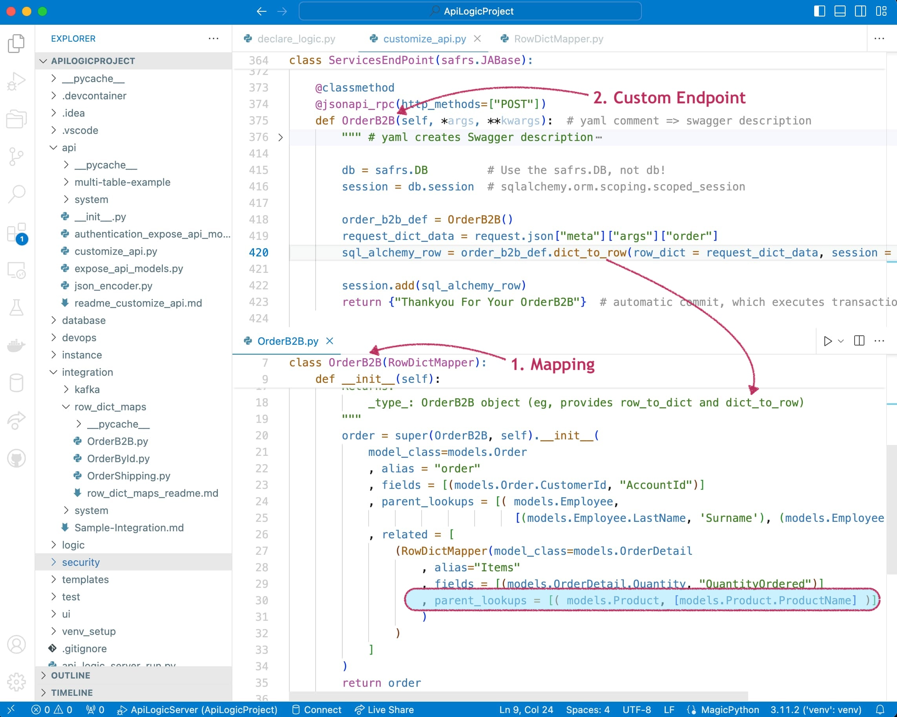

Tutorial
API Logic Server Sample Tutorial
Welcome to API Logic Server - thanks for giving it a try!
This is the sample app. It was created from the pre-installed sqlite Northwind database (Customer, Order, OrderDetail, Product, etc.).
In this tutorial, we will explore:
-
Create - we will briefly review what actually happened during the create process.
-
Run - we will first run the Admin App and the JSON:API. These will illustrate how automation creates an app and API from a database. Use this to infer what you'd get for one of your databases.
-
Customize - we will then explore customizing and debugging the project.
Key Underlying Concepts
This tutorial illustrates some key concepts:
Declarative Models, not code
Observe that the files for the Admin App and API are models that describe what, not how. This level of abstratction is much easier to understand than large amounts of generated code.
Automated Automation
Not only do models automate functionality, the models themselves are automated, created instantly when you create a project. That means you have instant Working Software.
Customize - using standard tools
The system is designed for you to customize the UI, Logic, Security and API, using standard tools - your IDE for code editing / debugging, git, etc.
Iterate - Preserve Customizations
The system is designed to enable rebuild, so you can iterate the data model - without losing your customizations. In general, such customizations are kept in separate files from the model files. So, the model files can be rebuilt without affecting customization files.
Logic Automation
A unique feature of API Logic Server is provision for spreadsheet-like rules, customizable with Python. Rules address update logic (multi-table derivations and constraints), and security (authorization).
Development Overview

The diagram above summarizes the create / run / customize process.
It's a video - click to view.
1. Create: Instant Project
The CLI command below creates an ApiLogicProject by reading your schema.
Note: the db_url value is defaulted to the pre-installed sample project; you would normally supply a SQLAlchemy URL.
2. Run
You can then open the project in your IDE, and run it as follows:
-
Create
venv: as shown in the Readme (not required for VSCode or Docker) -
Start the Server: F5 (PyCharm: Ctl-D).
-
Start the Admin App: either use the links provided in the IDE console, or click http://localhost:5656/. The screen shown below should appear in your Browser.
The system has created an API and an Admin App. Let's explore them.
2.a Self-Serve API: Ad hoc Integration
The system creates a JSON:API with end points for each table, providing filtering, sorting, pagination, optimistic locking and related data access.
The API is self-serve: consumers can select their own attributes and related data, eliminating reliance on custom API development. Our self-serve API meets requirements for Ad Hoc Application Integration, and Custom UI Dev.
2.b Admin App: Multi-Page, Multi-Table, Automatic Joins
The create command also creates an Admin App: multi-page, multi-table with automatic joins -- ready for business user agile collaboration, and back office data maintenance. This complements custom UIs you can create with the API.
After starting the server and browser, explore the Admin App in your browser:
- Navigate to
Customer- Depending on your screen size, you may need to hit the "hamburger menu" (top left) to see the left menu
- Depending on your screen size, you may need to hit the "hamburger menu" (top left) to see the left menu
- Click the first Customer row to see Customer Details
- Click the
ORDERLISTtab at the bottom - Click the first Order row
- Observe the
ORDERDETAILLISTtab at the bottom -
Observe the elements shown in the diagram
- Multi-Page - 2 pages for each table (list, with search, and display)
- Multi-Table - database relationships (typically from foreign keys) used to build master/detail pages
- Automatic Joins - the Order Detail table contains
ProductId, but the system has joined in theProduct Name. You can edit theadmin.yamlfile to control such behavior.

Key Takeaway: Microservice Automation
With 1 command, we have created an executable project with a self-serve API, for ad hoc application integration and custom UI development. Our Admin App can be used for agile business user collaboration.
3. Customize and Debug: in your IDE
While API/UI automation is a great start, we now require Custom APIs, Logic and Security.
You normally apply such customizations using your IDE, leveraging code completion, etc. To accelerate this sample, you can apply the customizations with ApiLogicServer add-cust. We'll review the customizations below.
Show me how -- apply customizations
The following add-cust process simulates:
- Adding security to your project using a CLI command, and
-
Using your IDE to:
- declare logic in
logic/declare_logic.sh - declare security in
security/declare_security.py - implement custom APIs in
api/customize_api.py, usingOrderShippingdeclared inintegration/row_dict_maps
- declare logic in
These customizations are shown in the screenshots below.
To apply customizations, in a terminal window for your project:
1. Stop the Server (Red Stop button, or Shift-F5 -- see Appendix)
2. Apply Customizations: in the terminal window of your IDE:
3. Restart the server, login as admin
In the sections below, we will explore:
- a. UI Customizations
- b. Logic Customizations
- c. Security Customizations
- d. Application Integration Customizations
3.a Customize UI: Declare UI Behavior
The admin app is not built with complex html and javascript. Instead, it is configured with ui/admin/admin.yml, automatically created from your data model by ApiLogicServer create.
You can customize this file in your IDE to control which fields are shown (including joins), hide/show conditions, help text etc. The add-cust process above has simulated such customizations.
To see customized Admin app in action, with the restarted server:
1. Start the Admin App: http://localhost:5656/
2. Login as ALFKI, password p
3. Click Customers
4. Click the first Customer
5. Click Add New Order (bottom of page)
6. Click Employee and choose the first one
7. Click SAVE AND SHOW
8. Click ADD NEW ORDER DETAIL
9. Lookup CHAI and enter an excessive Quantity as shown below
One customization has been to hide several Order fields (search ui/admin/admin.yml for show_when: isInserting == false). This makes it convenient to use the Admin App to enter an Order and OrderDetails:
Note the automation for automatic joins (Product Name, not ProductId) and lookups (select from a list of Products to obtain the foreign key). If we attempt to order too much Chai, the transaction properly fails due to the Check Credit rules, described below.
3.b Customize Logic: on Placing Orders, Check Credit
Such logic (multi-table derivations and constraints) is a significant portion of a system, typically nearly half. API Logic server provides spreadsheet-like rules that dramatically simplify and accelerate logic development.
IDE: Declare and Debug
The 5 check credit rules are shown below in logic/declare_logic.py.
Rules are 40X more concise than legacy code, as shown here.
Rules are declared in Python, simplified with IDE code completion. The add-cust process above has simulated the process of using your IDE to declare logic.
Observe rules can be debugged using standard logging and the debugger:
Rules operate by handling SQLAlchemy events, so apply to all ORM access, whether by the api engine, or your custom code. Once declared, you don't need to remember to call them, which promotes quality.
The rules shown above prevented the too-big order with multi-table logic to copy the Product Price, compute the Amount, roll it up to the AmountTotal and Balance, and check the CreditLimit.
These same rules also govern changing orders, deleting them, picking different parts - about 9 transactions, all automated. Implementing all this by hand would otherwise require about 200 lines of code.
Agility, Quality
Rules are a unique and significant innovation, providing meaningful improvements over procedural logic:
| CHARACTERISTIC | PROCEDURAL | DECLARATIVE | WHY IT MATTERS |
|---|---|---|---|
| Reuse | Not Automatic | Automatic - all Use Cases | 40X Code Reduction |
| Invocation | Passive - only if called | Active - call not required | Quality |
| Ordering | Manual | Automatic | Agile Maintenance |
| Optimizations | Manual | Automatic | Agile Design |
Key Takeway - Logic: Multi-table Derivations and Constraint Rules, Extensible with Python
Rules are:
1. Declared in your IDE - 40X more concise
2. Activated on server start
3. Executed - automatically - on updates (using SQLAlchemy events)
4. Debugged in your IDE, and with the console log
For more on rules, click here.
3.c Customize Security: Declare Grants
The add-cust process above has simulated the ApiLogicServer add-auth command, and using your IDE to declare security in logic/declare_security.sh.
To see security in action:
1. Logout (upper right), and Login as AFLKI, password p
* This authorized user has 2 roles: `customer` and 'tenant`
2. Click Customer - observe you now see only 1 customer (per the customer role)
Login, Row Filtering
Declarative row-level security ensures that users see only the rows authorized for their roles. Observe you now see only customer ALFKI, per the security declared below. Note the console log at the bottom shows how the filter worked.

Key Takeway - Row-Level Security: Customers Filtered
3.d Application Integration: B2B and Shipping
We now have a running system - an API, logic, security, and a UI. Now let's see how integrate with:
- Incoming B2B partners: we'll create a B2B Custom Resource
- Outgoing OrderShipping: we add logic to Send an OrderShipping Message
B2B Custom Resource
The self-serve API does not conform to the format required for a B2B partnership. We need to create a custom resource.
You can create custom resources by editing customize_api.py, using standard Python, Flask and SQLAlchemy. A custom OrderB2B resource is shown below.
The main task here is to map a B2B payload onto our logic-enabled SQLAlchemy rows. API Logic Server provides a declarative RowDictMapper class you can use as follows:
-
Declare the mapping -- see the
OrderB2Bclass in the lower pane- Note the support for lookup, so partners can send ProductNames, not ProductIds
-
Create the custom API endpoint -- see the upper pane:
- Add
def OrderB2Btocustomize_api/pyto create a new endpoint - Use the
OrderB2Bclass to transform a api request data to SQLAlchemy rows (dict_to_row) - The automatic commit initiates the same shared logic described above to check credit and reorder products
- Add

Key Takeway - Custom Endpoint - 7 lines of code
So, our custom endpoint required about 7 lines of code, along with the API specification. We use standard Python, Flask and SQLAlchemy. Note the logic is automatically factored out, and re-used for all APIs, both custom and self-serve.
Produce OrderShipping Message
Successful orders need to be sent to Shipping, again in a predesignated format.
We could certainly POST an API, but Messaging (here, Kafka) provides significant advantages:
- Async: Our system will not be impacted if the Shipping system is down. Kafka will save the message, and deliver it when Shipping is back up.
- Multi-cast: We can send a message that multiple systems (e.g., Accounting) can consume.
The content of the message is a JSON string, just like an API.
Just as you can customize apis, you can complement rule-based logic using Python events:
-
Declare the mapping -- see the
OrderShippingclass in the right pane. This formats our Kafka message content in the format agreed upon with Shipping. -
Define a Python
after_flushevent, which invokessend_order_to_shipping. This is called by the logic engine, which passes the SQLAlchemymodels.Orderrow. -
send_order_to_shippinguses theOrderShippingclass, which maps our SQLAlchemy order row to a dict (row_to_dict).
Key Takeway - Extensible Rules, Kafka Message Produced
Rule-based logic is extensible with Python, here producing a Kafka message with 20 lines of code.
3.e Customize the Data Model
You can also alter the data model, while preserving customizations. For more information, see Database Design Changes.
Testing
Behave
You can test using standard api and ui test tools. We recommend exploring the Behave framework. This can be used as part of an overall agile approach as described in the Logic Tutorial.
TL;DR - features and test scripts are predefined in the sample; to run them (with the server running):
- Run Launch Configuration
Behave Run - Run Launch Configuration
Behave Logic Report - Open
test/api_logic_server_behave/reports/Behave Logic Report.md
The sample Scenarios below were chosen to illustrate the basic patterns of using rules. Open the disclosure box ("Tests - and their logic...") to see the implementation and notes.
For more information, see Testing with Behave.
Test it
Use your IDE terminal window to simulate a business partner posting a B2BOrder. You can set breakpoints in the code described above to explore system operation.
ApiLogicServer curl "'POST' 'http://localhost:5656/api/ServicesEndPoint/OrderB2B'" --data '
{"meta": {"args": {"order": {
"AccountId": "ALFKI",
"Surname": "Buchanan",
"Given": "Steven",
"Items": [
{
"ProductName": "Chai",
"QuantityOrdered": 1
},
{
"ProductName": "Chang",
"QuantityOrdered": 2
}
]
}
}}}'
Summary
After the Tutorial, these are excellent next steps:
- Further explore Application Integration - open the Sample Integration tutorial
- It will show how to activate Kafka so that the message above is actually sent
- It will ilustrate to the consume Kafka messages
- You've already created most of it, so...
- Scan the intro
- See Show me how -- apply customizations, start Kafka
- And Consuming Messages
- Try other databases - here are some installed samples, and try your own
- Explore the Logic Tutorial.
The standard readme now follows.